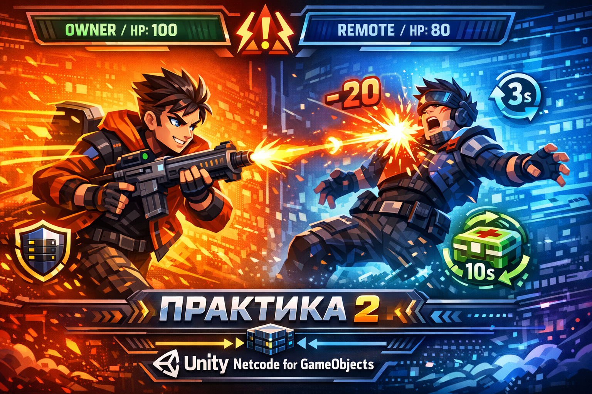

Уважаемый студент! Эта практика опирается на результат Практики 1. Убедитесь, что у вас уже работает подключение Host/Client и синхронизация HP через NetworkVariable. Если базовая логика сломана — сначала восстановите её, иначе этапы 3–5 работать не будут.
Практика 2. Движение, валидация и жизненный цикл объектов

Цель
Выйти за рамки простой синхронизации данных и построить полноценную игровую логику на сервере:
- синхронизировать движение персонажа через
NetworkTransform; - привязать камеру только к владельцу объекта;
- реализовать стрельбу снарядами с серверной валидацией;
- добавить цикл смерти и респавна, которым управляет только сервер;
- разместить на карте подбираемые предметы — самостоятельные сетевые объекты со своим жизненным циклом.
Ожидаемый результат
После выполнения практики:
- персонаж перемещается по сцене через WASD, удалённые игроки видят плавное движение;
- камера следит только за своим игроком и не прыгает на чужих при спавне;
- стрельба работает только при выполнении серверных условий: игрок жив, патроны есть, кулдаун прошёл;
- при смерти игрок «замирает», через 3 секунды автоматически возрождается с полным HP;
- на карте есть аптечки — сетевые объекты, которые появляются, подбираются и появляются снова.
Подготовка сцены
- Откройте проект из Практики 1 с работающим подключением и
NetworkVariableдля HP. - Добавьте на префаб игрока компонент
NetworkTransformиCharacterController. - Создайте префаб снаряда:
NetworkObject,Rigidbody(Is Kinematic — включено),SphereCollider(Is Trigger — включено). - Создайте префаб аптечки:
NetworkObject, простая геометрия,SphereCollider(Is Trigger — включено). - Зарегистрируйте оба префаба в
Network PrefabsуNetworkManager. - Добавьте на сцену пол (Plane) и несколько объектов для ориентации. Отметьте 2–3 точки респавна пустыми GameObject'ами.
Проверь
Префаб игрока содержит NetworkObject и NetworkTransform. Оба дополнительных префаба (снаряд и аптечка) зарегистрированы в NetworkManager.
Этап 1. NetworkTransform и движение
Игрок управляет только своим персонажем. Позиция синхронизируется для всех клиентов автоматически.
- Создайте скрипт движения: ввод WASD читается только при
IsOwner. - Перемещайте персонажа через
CharacterController.Move(). NetworkTransformсинхронизирует позицию на остальных клиентах с интерполяцией.- Проверьте, что только ваш персонаж реагирует на ввод, а удалённый двигается плавно.
Подсказка: каркас скрипта движения
Движение обрабатывается только у владельца. CharacterController сам рассчитывает коллизии, а NetworkTransform транслирует итоговую позицию в сеть.
using Unity.Netcode;
using UnityEngine;
[RequireComponent(typeof(CharacterController))]
public class PlayerMovement : NetworkBehaviour
{
[SerializeField] private float _speed = 5f;
[SerializeField] private float _gravity = -9.81f;
private CharacterController _cc;
private float _verticalVelocity;
private void Awake() => _cc = GetComponent<CharacterController>();
private void Update()
{
if (!IsOwner) return;
float h = Input.GetAxis("Horizontal");
float v = Input.GetAxis("Vertical");
Vector3 move = new Vector3(h, 0f, v).normalized * _speed;
_verticalVelocity += _gravity * Time.deltaTime;
move.y = _verticalVelocity;
_cc.Move(move * Time.deltaTime);
if (_cc.isGrounded) _verticalVelocity = 0f;
}
}Проверь
В двух окнах каждый управляет только своим персонажем. Удалённый игрок движется плавно, без рывков и телепортаций.
Этап 2. Камера владельца
Каждый клиент видит сцену от своего персонажа. Чужие игроки не должны перехватывать камеру.
- В
OnNetworkSpawnпроверьтеIsOwner— только владелец настраивает камеру. - Используйте
LateUpdateдля следования камеры: она обновляется после физики и не дёргается. - У чужих игроков полностью отключите скрипт камеры через
enabled = false.
Подсказка: камера только для IsOwner
Устанавливать enabled = false в OnNetworkSpawn безопаснее, чем проверять IsOwner каждый кадр в LateUpdate: скрипт вообще не вызывается у чужих.
using Unity.Netcode;
using UnityEngine;
public class PlayerCamera : NetworkBehaviour
{
[SerializeField] private Vector3 _offset = new(0f, 8f, -6f);
private Camera _cam;
public override void OnNetworkSpawn()
{
if (!IsOwner)
{
enabled = false;
return;
}
_cam = Camera.main;
}
private void LateUpdate()
{
if (_cam == null) return;
_cam.transform.position = transform.position + _offset;
_cam.transform.LookAt(transform.position);
}
}Проверь
Камера в каждом окне следит за своим персонажем. При подключении второго игрока камера первого не перескакивает.
Этап 3. Стрельба с серверной валидацией
Клиент не решает, выстрел произошёл или нет — это решает только сервер. Без валидации любой клиент может стрелять бесконечно, мгновенно и даже после смерти.
- При нажатии клавиши владелец вызывает
ServerRpcс направлением выстрела. - Если используете New Input System с callback-подписками, не вызывайте
ServerRpcу чужих инстансов: либо добавьтеif (!IsOwner) return;в callback, либо используйте[ServerRpc(RequireOwnership = false)]и валидируйте всё на сервере. - Сервер проверяет три условия прежде чем спавнить снаряд: игрок жив, патроны не кончились, кулдаун прошёл.
- Если хоть одно условие не выполнено —
return, снаряд не создаётся. - На снаряде реализуйте
OnTriggerEnter: только сервер обрабатывает попадание и наносит урон. - Стрелок не должен получать урон от собственного снаряда.
Подсказка: PlayerShooting с валидацией
Обратите внимание на ServerRpcParams — через него получаем SenderClientId для SpawnWithOwnership. Это позволяет снаряду знать своего владельца при попадании.
using Unity.Netcode;
using UnityEngine;
public class PlayerShooting : NetworkBehaviour
{
[SerializeField] private GameObject _projectilePrefab;
[SerializeField] private Transform _firePoint;
[SerializeField] private float _cooldown = 0.4f;
[SerializeField] private int _maxAmmo = 10;
private float _lastShotTime;
private int _currentAmmo;
// IsAlive и связь с PlayerNetwork настраивается студентом
private PlayerNetwork _playerNetwork;
public override void OnNetworkSpawn()
{
_currentAmmo = _maxAmmo;
_playerNetwork = GetComponent<PlayerNetwork>();
}
private void Update()
{
if (!IsOwner) return;
if (Input.GetKeyDown(KeyCode.Space))
ShootServerRpc(_firePoint.position, _firePoint.forward);
}
[ServerRpc(RequireOwnership = false)]
private void ShootServerRpc(Vector3 pos, Vector3 dir,
ServerRpcParams rpc = default)
{
// 1. Жив ли игрок?
if (!_playerNetwork.IsAlive.Value) return;
// 2. Есть ли патроны?
if (_currentAmmo <= 0) return;
// 3. Прошёл ли кулдаун?
if (Time.time < _lastShotTime + _cooldown) return;
_lastShotTime = Time.time;
_currentAmmo--;
var go = Instantiate(_projectilePrefab, pos + dir * 1.2f,
Quaternion.LookRotation(dir));
var no = go.GetComponent<NetworkObject>();
no.SpawnWithOwnership(rpc.Receive.SenderClientId);
}
}
// --- Скрипт на снаряде ---
public class Projectile : NetworkBehaviour
{
[SerializeField] private float _speed = 18f;
[SerializeField] private int _damage = 20;
private void Update()
{
transform.Translate(Vector3.forward * _speed * Time.deltaTime);
}
private void OnTriggerEnter(Collider other)
{
if (!IsServer) return;
var target = other.GetComponent<PlayerNetwork>();
if (target == null) return;
// Не наносим урон самому себе
if (target.OwnerClientId == OwnerClientId) return;
int newHp = Mathf.Max(0, target.HP.Value - _damage);
target.HP.Value = newHp;
NetworkObject.Despawn(destroy: true);
}
}Проверь
Попробуйте вызвать выстрел после «смерти» (HP = 0) или быстро зажать клавишу — снаряды не должны спавниться, если условия не выполнены. Снаряд попадает в другого игрока и уменьшает его HP у обоих клиентов.
Этап 4. Смерть и респавн
Когда HP доходит до нуля, сервер должен перевести игрока в состояние «мёртв», заблокировать управление, а через 3 секунды — возродить его. Это первый пример того, как сервер управляет состоянием всех клиентов через одну сетевую переменную.
- Добавьте в
PlayerNetworkновую переменнуюNetworkVariable<bool> IsAlive. - Подпишитесь на
HP.OnValueChanged: когда HP падает до 0 — сервер устанавливаетIsAlive.Value = false. - В скриптах движения и стрельбы добавьте проверку
IsAlive— мёртвый не двигается и не стреляет. - На сервере запустите корутину: через 3 секунды переместите игрока в точку респавна, восстановите HP, установите
IsAlive.Value = true. - Все клиенты реагируют на изменение
IsAliveавтоматически — например, показывают/скрывают модель.
Подсказка: серверная логика смерти и возрождения
Всё состояние хранится в NetworkVariable — клиентам не нужно знать о корутине. Они просто реагируют на изменение значения.
using Unity.Netcode;
using UnityEngine;
using System.Collections;
public class PlayerNetwork : NetworkBehaviour
{
public NetworkVariable<int> HP = new(
100,
NetworkVariableReadPermission.Everyone,
NetworkVariableWritePermission.Server
);
public NetworkVariable<bool> IsAlive = new(
true,
NetworkVariableReadPermission.Everyone,
NetworkVariableWritePermission.Server
);
[SerializeField] private Transform[] _spawnPoints;
public override void OnNetworkSpawn()
{
HP.OnValueChanged += OnHpChanged;
IsAlive.OnValueChanged += OnIsAliveChanged;
}
public override void OnNetworkDespawn()
{
HP.OnValueChanged -= OnHpChanged;
IsAlive.OnValueChanged -= OnIsAliveChanged;
}
private void OnHpChanged(int prev, int next)
{
// Только сервер запускает цикл смерти
if (!IsServer) return;
if (next <= 0 && IsAlive.Value)
{
IsAlive.Value = false;
StartCoroutine(RespawnRoutine());
}
}
private IEnumerator RespawnRoutine()
{
yield return new WaitForSeconds(3f);
// Выбрать случайную точку респавна
int idx = Random.Range(0, _spawnPoints.Length);
// CharacterController кэширует позицию — нужно отключить перед телепортом
var cc = GetComponent<CharacterController>();
cc.enabled = false;
transform.position = _spawnPoints[idx].position;
cc.enabled = true;
HP.Value = 100;
IsAlive.Value = true;
}
private void OnIsAliveChanged(bool prev, bool next)
{
// Показываем/скрываем модель на всех клиентах
// Студент реализует самостоятельно
}
}Проверь
Нанесите урон игроку до нуля HP. Он должен «замереть» (не реагировать на ввод), через 3 секунды появиться в точке респавна с полным HP. Оба клиента видят это одновременно.
Этап 5. Аптечки на карте
Это самый важный этап с точки зрения новых концептов: аптечки — это самостоятельные сетевые объекты, не привязанные ни к одному игроку. У них собственный жизненный цикл: сервер их спавнит, они существуют на карте, игрок подбирает — сервер делает Despawn, через 10 секунд спавнит снова.
- Создайте серверный менеджер
PickupManager— он запускается только на сервере и спавнит аптечки в заданных позициях. - На скрипте аптечки реализуйте
OnTriggerEnter: только сервер обрабатывает подбор. - При подборе: восстановите HP игрока, сделайте
Despawnаптечки, сообщите менеджеру — тот через 10 секунд заспавнит её снова. - Аптечка не должна помогать, если у игрока уже полное HP.
- Мёртвый игрок не должен подбирать аптечки.
Подсказка: PickupManager и скрипт аптечки
Менеджер существует вне сетевой иерархии — это обычный MonoBehaviour только на сервере. Аптечка при подборе вызывает событие, менеджер его слушает и планирует повторный спавн.
using Unity.Netcode;
using UnityEngine;
using System.Collections;
// PickupManager — обычный MonoBehaviour, работает только на сервере
public class PickupManager : MonoBehaviour
{
[SerializeField] private GameObject _healthPickupPrefab;
[SerializeField] private Transform[] _spawnPoints;
[SerializeField] private float _respawnDelay = 10f;
private void Start()
{
// Подписываемся на событие — Start() может сработать до старта сессии
NetworkManager.Singleton.OnServerStarted += SpawnAll;
}
private void OnDestroy()
{
if (NetworkManager.Singleton != null)
NetworkManager.Singleton.OnServerStarted -= SpawnAll;
}
private void SpawnAll()
{
foreach (var point in _spawnPoints)
SpawnPickup(point.position);
}
public void OnPickedUp(Vector3 position)
{
StartCoroutine(RespawnAfterDelay(position));
}
private IEnumerator RespawnAfterDelay(Vector3 position)
{
yield return new WaitForSeconds(_respawnDelay);
SpawnPickup(position);
}
private void SpawnPickup(Vector3 position)
{
var go = Instantiate(_healthPickupPrefab, position, Quaternion.identity);
go.GetComponent<HealthPickup>().Init(this);
go.GetComponent<NetworkObject>().Spawn();
}
}
// HealthPickup — сетевой скрипт на префабе аптечки
public class HealthPickup : NetworkBehaviour
{
[SerializeField] private int _healAmount = 40;
private PickupManager _manager;
private Vector3 _spawnPosition;
public void Init(PickupManager manager)
{
_manager = manager;
_spawnPosition = transform.position;
}
private void OnTriggerEnter(Collider other)
{
if (!IsServer) return;
var player = other.GetComponent<PlayerNetwork>();
if (player == null) return;
// Мёртвый не подбирает
if (!player.IsAlive.Value) return;
// Не лечить при полном HP
if (player.HP.Value >= 100) return;
player.HP.Value = Mathf.Min(100, player.HP.Value + _healAmount);
_manager.OnPickedUp(_spawnPosition);
NetworkObject.Despawn(destroy: true);
}
}Проверь
Аптечки появляются на карте при старте сессии. При подходе игрока HP восстанавливается, аптечка исчезает у обоих клиентов. Через 10 секунд она появляется снова. Подбор не работает при полном HP и в состоянии смерти.
Что нужно реализовать самостоятельно
- скрипт движения WASD с проверкой
IsAlive— мёртвый игрок не двигается; - логику показа/скрытия модели игрока при смерти и возрождении;
- отображение оставшихся патронов в UI (синхронизация через
NetworkVariable<int>или только локально у владельца); - визуальный счётчик или таймер до респавна — только у умершего игрока;
- защиту от подбора аптечки при полном HP и в состоянии смерти (если не добавили в шаблон);
- расстановку точек спавна аптечек и игроков на сцене.
Требования к сдаче
- Продемонстрировать движение WASD в двух окнах: каждый управляет только своим персонажем.
- Показать, что камера не перескакивает на чужого при подключении второго игрока.
- Показать, что при быстром зажатии кнопки выстрела кулдаун ограничивает частоту — снаряды не спамятся.
- Показать полный цикл смерти: HP → 0, игрок замирает, через 3 сек появляется в точке респавна с полным HP.
- Показать работу аптечек: появление на карте, подбор с восстановлением HP, исчезновение, повторный спавн.
- Предоставить видео работы приложения.
- Предоставить ссылку на Git-репозиторий проекта.
Справочник по NGO (быстрые опоры)
Этот блок поможет быстро вспоминать, какой компонент за что отвечает в практике 2 и где чаще всего допускают ошибки.
NetworkManager и UnityTransport
NetworkManager — центральная точка сетевой сессии. Через него запускается Host/Server/Client, хранится список подключённых клиентов и выполняется сетевой спавн объектов.
IsServer—trueна сервере и на хосте.IsClient—trueна клиенте и на хосте.IsHost—trueтолько в режиме Host.LocalClientId— ID текущего клиента.ConnectedClients— словарь всех подключённых клиентов.OnServerStarted— событие успешного старта сервера.OnClientConnectedCallback— событие подключения клиента.
UnityTransport отвечает за передачу пакетов. Ключевые настройки: Protocol Type, Address, Port, Max Payload Size. Для локального теста обычно достаточно 127.0.0.1:7777.
NetworkObject и NetworkBehaviour
NetworkObject делает GameObject сетевым. Без него NetworkVariable, RPC и сетевой спавн не работают.
Spawn()— спавн без владельца.SpawnWithOwnership(clientId)— спавн с назначенным владельцем.Despawn(destroy: true)— удалить объект из сети и уничтожить.
NetworkBehaviour — база для сетевых скриптов. Сетевую инициализацию делайте в OnNetworkSpawn(), очистку подписок — в OnNetworkDespawn(). В Awake()/Start() проверки IsOwner/IsServer могут быть ещё невалидны.
NetworkVariable и подписки
NetworkVariable синхронизирует состояние между клиентами. Для игровой логики почти всегда используйте запись только на сервере:
public NetworkVariable<int> HP = new(
100,
NetworkVariableReadPermission.Everyone,
NetworkVariableWritePermission.Server
);Подписка на изменения в OnNetworkSpawn(), отписка в OnNetworkDespawn(). Клиент не должен менять серверные переменные напрямую.
NetworkTransform и авторитет
NetworkTransform автоматически синхронизирует позицию/поворот/масштаб. По умолчанию источник истины — сервер. Если перемещение задаёт владелец объекта, переключите Authority Mode в Client в инспекторе.
IsOwner, IsServer, IsClient, IsHost
- Ввод и камера:
if (!IsOwner) return; - Урон, спавн, изменение состояния:
if (!IsServer) return; IsClient— общий клиентский код (используется реже).IsHost— спец-ветки только для режима сервер+клиент в одном процессе.
ServerRpc и ClientRpc
ServerRpc вызывается клиентом, выполняется на сервере. ClientRpc вызывается сервером, выполняется на клиентах.
[ServerRpc(RequireOwnership = false)]
private void DoSomethingServerRpc(ServerRpcParams rpc = default)
{
ulong sender = rpc.Receive.SenderClientId;
}
[ClientRpc]
private void NotifyClientRpc(string message)
{
}
Практическое правило: любые критические действия (урон, смерть, спавн, изменение NetworkVariable) подтверждает и выполняет только сервер.